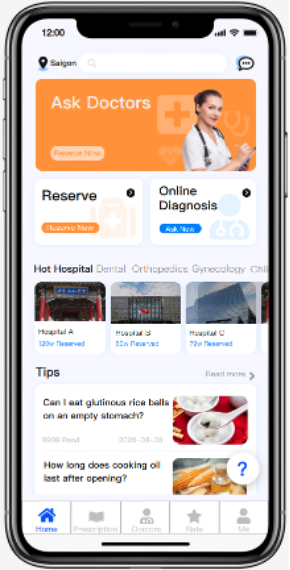
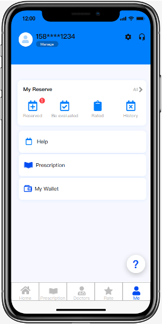
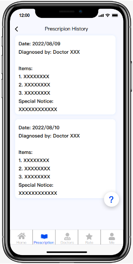

Introduction
DescriptionThe advent of the internet and its rapid penetration into every aspect of our lives has redefined the way we interact, work, and access information. One industry that has been revolutionized by the power of the digital world is healthcare. Online healthcare, a fusion of technology and medicine, has the potential to transform the patient experience, making healthcare more accessible, efficient, and personalized than ever before. Our GoalWe want to provide some tools for people seeking medical treatment without actually going to the hospital. For elderly people living alone, we will notice their emergent healthy questions and give them help on time. For people who just need some medicine but not necessarily professional treatment from doctors, they would not need to wait in long lines in the hospital and waste medical resources which would be more valuable for severe patients. My Work
Need-finding
Brainstorming and IdeationUser DifferentiationDifferent users should be categorized into different groups to be provided more specialized services.
Core ServicesProviding consultation service to help know the users in a finer granularity.
Core Services
External Support
Privacy and Security
Personal Reflection
Prototype  Heuristic AnalysisAnalysis was first performed on the UI design sketches, and then on first draft of the Prototype, involving in two phases: Inspection and Walkthrough. ConsistencyInternal consistency throughout menus and sub menus by positioning items relatively in the same place. External consistency is maintained by standard web and app design Iconography and Images that most users are already familiar with. MinimalismThe application uses a clean design, omits any information that is not necessary and ensures white space while reading important information (prescriptions, doctor descriptions, ratings, etc), to not overwhelm them with a lot of content. FreedomPrivacy was a major concern for users when we did our phase 1 evaluation. A delete history button has therefore been added in the accounts option, so that patients can delete any information they don’t want us to store. They can also delete their ratings. FlexibilityPatients who might not be sure about who they should consult have two options:
Recognition and MappingRecognition has been for the users by using standard web and app design Iconography and Images that most users are already familiar with. This also provides mapping from real world phenomenons to the application. VisibilityIn order to give control back to the users we ensure the users always have access to their entire medical and prescription history. They can selectively give access to their history to any doctor they wish. They can ask for updated on the prescription right form the app. Error Prevention and RecoveryError prevention is ensured by user ratings for doctors. The users can only rate those doctors they have consulted with using the platform. Ratings also ensure error recovery as the platform and hospitals can use patient reviews to decide whether to host a doctor or not. HelpWe aim to both proactive and reactive help approaches. Proactive help to help users answer Frequently asked health questions. Reactive help for questions related to using the application, and questions not in the FAQ’s. |